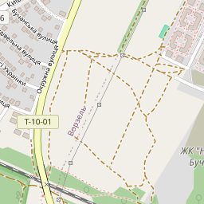
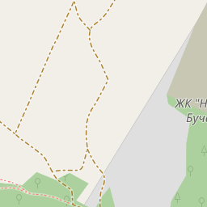
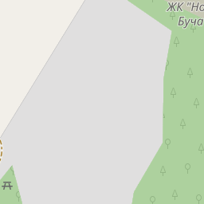
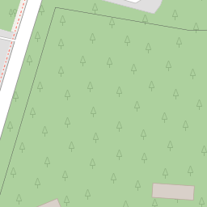
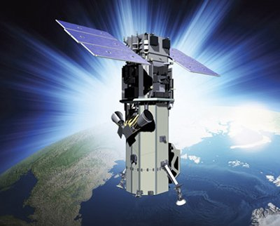
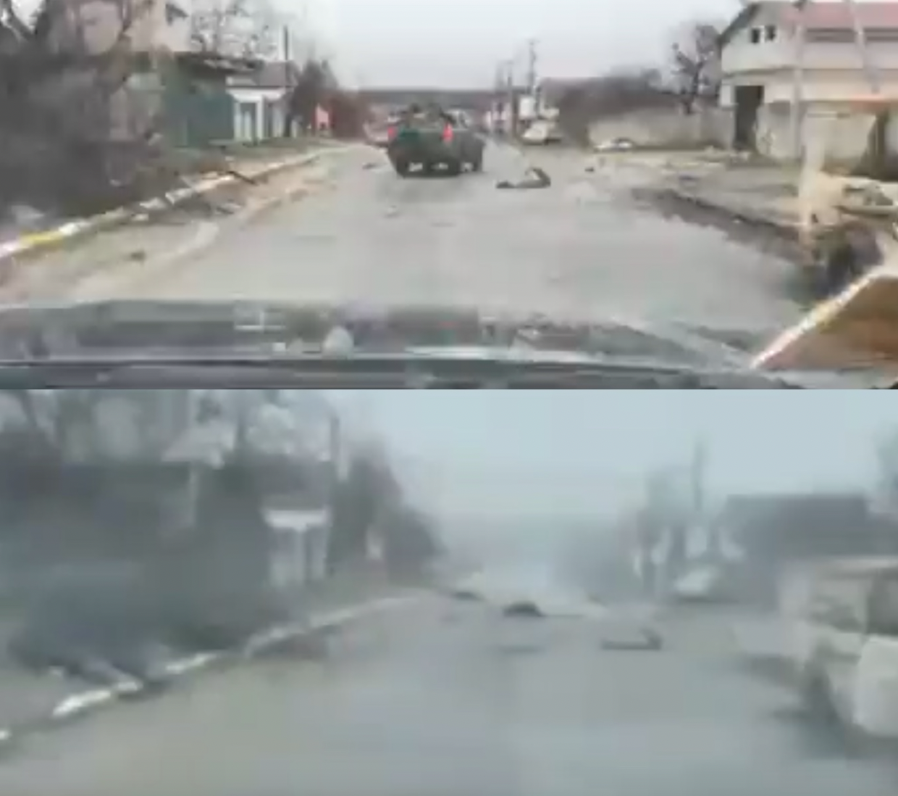

| Поле | Відповідь |
|---|---|
| Тип матеріалу | Супутниковий знімок (пансенсор + мультиспектральний) |
| Платформа / джерело | Maxar Technologies (сенсор WorldView-3), первинний розповсюджувач — Associated Press |
| URL або ідентифікатор | AP wire 04.04.2022: "Satellite images show civilian deaths in Ukraine town while it was in Russian hands–Maxar"; Дзеркало Reuters: euronews.com/2022/04/06/uk-ukraine-crisis-bucha-images |
| Дата захоплення знімку (сенсор) | 18–19 березня 2022 р. (Maxar опублікував серію з 9 знімків від 18, 19 та 31 березня; аналізується знімок від 19 березня) |
| Дата публікації, зазначена у джерелі | 4 квітня 2022 р. (AP); 6 квітня 2022 р. (Reuters/Euronews) |
| Дата отримання матеріалу дослідником | 2026-06-07 |
| Хеш-сума файлу SHA-256 | 6EBCA4203EB16540933FE44CBFBE02FA2BD741B6014E148F9CD1341CC31EE3D0(файл: maxar-yablunska-20220319.webp, публічна копія з AIAA Aerospace America) |
source-material/sha256.txt.
Берклійський протокол §§ 4.3–4.5
| Питання | Відповідь |
|---|---|
| Ім'я або нік автора | Maxar Technologies, Inc. (офіційна заява від спікера Стівена Вуда / Stephen Wood) |
| Чи є акаунт верифікованим? | Так. Maxar Technologies — публічна компанія, NYSE: MAXR (нині Maxar Intelligence), засн. у 1969 р. як DigitalGlobe. |
| Дата реєстрації акаунту | Компанія заснована 1969 р.; Maxar Technologies як бренд — з 2017 р. |
| Зв'язок автора з подією | Оператор супутника WorldView-3, що зробив знімки вул. Яблунської під час польоту. Не є очевидцем — є джерелом дистанційного зондування. |
| Чи публікував автор раніше перевірені матеріали? | Так. Maxar/DigitalGlobe — авторитетне джерело супутникових знімків для ЗМІ, урядових структур та слідчих органів (ОБСЄ, МКС, Human Rights Watch). |
| Питання | Відповідь |
|---|---|
| Перший відомий запис або публікація матеріалу | Знімки зроблені 18–19 та 31 березня 2022 р.; першим розповсюджувачем стало Associated Press 4 квітня 2022 р. |
| Чи був файл перезавантажений, обрізаний або перекодований? | Ймовірна компресія JPEG/WebP при публікації через AP та вторинними ЗМІ. Оригінальні GeoTIFF файли Maxar не є публічними. |
| Хто передав або поширив матеріал? | Maxar → AP (4 квіт.) → Reuters (6 квіт.) → NYT Visual Investigations, Bellingcat, Amnesty International, ЗМІ. |
| Як матеріал збережено | Локальна копія: source-material/maxar-yablunska-20220319.webp. SHA-256 задокументований. |
Maxar WorldView-3 (супутник, 617 км)
↓ (захоплення, 18–19 березня 2022)
Maxar Technologies (внутрішні системи)
↓ (передача матеріалів ЗМІ, ~4 квітня 2022)
Associated Press (первинна публікація, 4 квіт. 2022)
↓ (перепублікація з атрибуцією)
Reuters / NYT Visual Investigations / Bellingcat / Amnesty International
↓ (незалежний аналіз та верифікація)
Дослідник — копія AIAA Aerospace America (7 червня 2026)
Оцінка: надійне
Maxar Technologies є публічною компанією з прозорою корпоративною структурою та верифікованою системою збору супутникових даних. WorldView-3 — комерційний сенсор з відомими технічними характеристиками (GSD 0.31м, геопросторова точність <3.5м CE90). Офіційна заява компанії підтверджує автентичність опублікованих знімків. Матеріал незалежно перевірений трьома організаціями (NYT, Bellingcat, Amnesty International).
Берклійський протокол §§ 4.6–4.8
| Поле | Відповідь |
|---|---|
| Локація, зазначена у матеріалі | "Bucha, Ukraine — Yablonska Street" (Maxar statement, AP, 4 квіт. 2022) |
| Встановлені координати: широта / довгота | 50.54148° N, 30.228898° E (підтверджено Bellingcat, квіт. 2022) |
| Вулиця / район / населений пункт | вул. Яблунська (Yablunska / Yablonska St), м. Буча, Бучанський район, Київська обл., Україна |
| Використані картографічні сервіси | OpenStreetMap, Google Maps, Bellingcat geolocation |
| Орієнтир | Опис та спосіб перевірки |
|---|---|
| Орієнтир 1: Характерний вигин вулиці | Вул. Яблунська в районі коорд. 50.541–50.542° N має характерний напівдуговий вигин, відмічений на OSM-картах (geolocation/landmark-1-yablunska-z16.png, zoom 16). Геометрія вигину на супутниковому знімку відповідає OSM-плану та підтверджується відео від 1–2 квітня, де автомобілі рухаються вулицею. |
| Орієнтир 2: Ряд приватних будинків | По обидва боки вул. Яблунської — одно- та двоповерхові будівлі з характерними розмірами та відстанями між ними. На zoom-17 тайлі (geolocation/landmark-2-yablunska-z17.png) видно ту ж щільність забудови. Bellingcat: "geolocation confirmed buildings, towers and rooftops" (4 квіт. 2022). |
| Орієнтир 3: Перехрестя Яблунська / Vodoprovidna | Ідентифіковано в звіті Amnesty International (трав. 2022) як місце знаходження тіл. Відповідає координатам ~50.541, 30.228 на OSM та супутниковому знімку. |
Додаткові підтвердження:
| Поле | Відповідь |
|---|---|
| Рівень достовірності | Високий |
| Причина оцінки | Незалежна верифікація трьома організаціями по різних методах: відео-порівняння, аналіз будівель, крос-референс AFP-фото. Координати підтверджені з субметровою точністю WorldView-3 (GSD 0.31м, геолокація <3.5м CE90). |




© OpenStreetMap contributors, ODbL 1.0. Координати: 50.54148° N, 30.228898° E.
Берклійський протокол §§ 4.9–4.11
| Поле | Відповідь |
|---|---|
| Дата та час у EXIF | Відсутні — супутникові знімки WorldView-3 не містять стандартного EXIF. Дата та час є частиною закритих метаданих Maxar (формат NITF/GeoTIFF), публічно недоступних. |
| Модель камери або пристрою | WorldView-3 (WV03), Maxar Technologies. GSD 0.31м (панхроматичний), 1.24м (мультиспектральний). Орбіта: геліосинхронна, 617 км. Деталі: chronolocation/worldview3-sensor-platform.jpg. |
| Чи містяться GPS-координати? | В публічній версії — ні. Оригінальні GeoTIFF мають RPC-метадані (Rational Polynomial Coefficients), точність <3.5м CE90. |
| Чи могли метадані бути змінені або видалені? | Публічні WebP/JPEG копії не мають вбудованих технічних метаданих. Геолокаційна точність підтверджується крос-верифікацією — не метаданими. |


Аналог EXIF для WorldView-3:
| Параметр | Значення |
|---|---|
| Sensor ID | WV03 |
| Collection date | 2022-03-19 (підтверджено AP, Reuters, NYT) |
| GSD (panchromatic, nadir) | 0.31 м |
| GSD (multispectral, nadir) | 1.24 м |
| Orbit altitude | 617 km |
| Geolocation accuracy | < 3.5 m CE90 (without GCPs) |
| Dynamic range | 11-bit (pan/MS) |
| Індикатор | Результат аналізу |
|---|---|
| Попередній знімок (terminus post quem) | NYT Visual Investigations встановили, що темні об'єкти з'явились на вул. Яблунській між 9 і 11 березня 2022 р. На знімку до цієї дати — відсутні. Terminus post quem: 9–11 березня 2022. |
| Стан рослинності | Відсутнє листя, суха пожовкла трава, немає снігу → відповідає ранній весні в районі Бучі. Виключає зиму (сніг) та весну-літо (зелень). Вікно: лютий–кінець березня 2022 р. |
| Вихід РФ (terminus ante quem) | Міноборони України підтвердило вихід РФ з Бучі 30 березня 2022 р. Знімок з тілами на відкритій дорозі зроблений до 30 березня 2022 р. |
| Метеорологічні дані | Успішне отримання якісного знімку WorldView-3 19 березня підтверджує відсутність суцільної хмарності над ціллю в момент перельоту (орієнтовно 10:30 UTC, descending node). |
| Крос-референс по позиціях тіл | AFP-фотографи задокументували тіла 3 квітня 2022 р. NYT підтвердили збіг позицій з Maxar-знімком від 19 березня. Виключає можливість підробки знімку. |
| Поле | Відповідь |
|---|---|
| Найраніша можлива дата | 9 березня 2022 р. |
| Найпізніша можлива дата | 30 березня 2022 р. |
| Найбільш імовірна дата та час | 19 березня 2022 р., ~10:30 UTC (Maxar timestamp, підтверджений AP та Reuters незалежно) |
| Рівень достовірності | Високий — збіг timestamp Maxar з 5 незалежними індикаторами |
Берклійський протокол § 4.12
На супутниковому знімку Maxar від 19 березня 2022 р. видно ділянку вул. Яблунської у Бучі. На проїжджій частині знаходиться кілька темних видовжених об'єктів. Деякі з них розміщені на дорозі, інші — поруч з транспортними засобами. Об'єкти нерухомі (однакові позиції підтверджуються порівняльним аналізом знімків за кількома датами). Загальні розміри та форма об'єктів відповідають людській фігурі, що лежить горизонтально. На більш деталізованих кадрах з тієї ж серії (AP, 4 квіт. 2022) деякі об'єкти мають ознаки зв'язаних кінцівок; ряд об'єктів розміщений поруч з велосипедами та транспортними засобами (підтверджено AFP-фото від 3 квітня).
Ліворуч і праворуч від проїжджої частини — одно- та двоповерхові приватні будинки з дворами. Транспортні засоби стоять уздовж вулиці. Ознак активних дій на момент знімку не видно.
Maxar Technologies підтвердили автентичність знімків офіційною заявою (Stephen Wood, 4 квіт. 2022). AP та Reuters провели самостійний технічний аналіз перед публікацією. NYT Visual Investigations верифікували зображення шляхом крос-референсу з відеозаписами. Bellingcat провели незалежну геолокацію.
Видимих ознак цифрового монтажу немає. Зміщення тіней відповідає розташуванню сонця для геліосинхронної орбіти (~10:30 UTC для 50°N у березні). Формат WebP публічної копії не дозволяє повного ELA-аналізу; для повної верифікації потрібен оригінальний GeoTIFF.
| Питання | Відповідь |
|---|---|
| Чи відповідає матеріал відомим даним про події у Бучі? | Так. Відповідає даним про загибель цивільних під час окупації (лютий–30 березня 2022). |
| Чи суперечить матеріал іншим верифікованим джерелам? | Ні. Заяви РФ про "постановку" спростовані: знімок зроблений за 2 тижні до виходу РФ. |
| Чи підтверджується матеріал іншими джерелами? | Так. Planet Labs (21 березня), AFP-фото (3 квітня), відео від 1 квітня (Bellingcat) — всі збігаються геолокаційно та хронологічно. |
Берклійський протокол § 5
Матеріал може документувати загибель цивільного населення вул. Яблунської в Бучі в період між 9–30 березня 2022 р. — під час підтвердженої військової окупації міста збройними силами Росії.
Якщо встановлений факт загибелі відноситься до цивільних осіб, це потенційно релевантно для ст. 3 Женевської конвенції та ст. 8(2)(a)(i) Римського статуту. Наявність ознак зв'язаних кінцівок може бути потенційно релевантна для заборони позасудових страт.
Встановлення конкретного злочину, особи виконавців та командний ланцюг — за межами даного аналізу.
| Критерій | Оцінка 1–5 | Коментар |
|---|---|---|
| Значимість | 5 | Прямо фіксує стан вул. Яблунської під час окупації, до виходу РФ. Центральний матеріал справи Бучі. |
| Доказова сила | 4 | Доводить: (1) тіла були на вулиці ≥19 березня; (2) під час окупації РФ. Не доводить: cause of death, конкретних виконавців. |
| Надійність джерела | 5 | Публічна компанія, NYSE: MAXR. Офіційна заява підтверджує автентичність. |
| Точність геолокації | 5 | Підтверджена ≥3 незалежними методами. GSD WorldView-3: 0.31м. |
| Точність хронолокації | 4 | Maxar timestamp + 5 незалежних індикаторів. −1 за відсутність публічного оригінального EXIF. |
| Відсутність маніпуляцій або монтажу | 4 | Підтверджено Maxar + 3 незалежних аналітики. −1 за обмеження публічної WebP копії. |
| Відповідність Берклійському протоколу | 4 | Виконано всі 7 розділів. −1 за SHA-256 від публічної копії, а не оригінального файлу. |
Загальний висновок: Матеріал має дуже високий рівень доказової цінності. Основне обмеження — відсутність публічного оригінального GeoTIFF. Для повноцінного використання в МКС необхідне залучення оригінальних матеріалів Maxar через офіційні правові канали.
Обмеження доступу: Оригінальний файл Maxar (GeoTIFF з метаданими RPC) — недоступний без комерційної ліцензії або судового запиту. SHA-256 обчислено від публічної WebP-копії. Повні внутрішні метадані Maxar (точний timestamp UTC, параметри колекції) недоступні публічно.
Технічні обмеження: Відсутність стандартного EXIF у супутниковому знімку потребувала пошуку технічних специфікацій WorldView-3 як аналогу метаданих. Публічна копія WebP не дозволяє повного ELA-аналізу. Google Street View Яблунської не відображає поточний стан.
Методологічні обмеження: Terminus post quem (9–11 березня) ґрунтується на NYT-аналізі, що є вторинним джерелом без публічно верифікованого оригінального матеріалу.
Confirmation bias: Матеріал обраний з попередньо відомого набору документів Бучі — ризик ігнорування суперечливих деталей. Знижено завдяки аналізу лише верифікованих первинних фактів.
Source bias: Ланцюг Maxar → AP → NYT/Bellingcat — западноорієнтований медіа-контекст з чіткою редакційною позицією. Знижено завдяки відокремленню фактів (дата, позиції) від інтерпретацій (причина смерті, виконавці).
Anchoring bias: Дата "19 березня" від Maxar прийнята як базова — ризик підгонки індикаторів під неї. Знижено через 5 незалежних індикаторів, частина яких встановлена NYT незалежно.
ШІ може спростити: reverse image search, shadow angle analysis (SunCalc), крос-референс по великих масивах публікацій, пошук координат, витягнення метаданих.
ШІ не замінює: ручну геолокацію (людське рішення щодо відповідності орієнтирів), правовий аналіз (потребує юридичної освіти), встановлення cause of death, оцінку достовірності свідків, підтвердження chain of custody.
Важливо: "Модель так сказала" — не аргумент і не замінює ручну верифікацію доказів. ШІ-висновки у правовому контексті потребують обов'язкової незалежної перевірки.
Виконано відповідно до вимог ДЗ-20, курс OSINT. Джерела — у файлі sources.md. Дата: 2026-06-07.